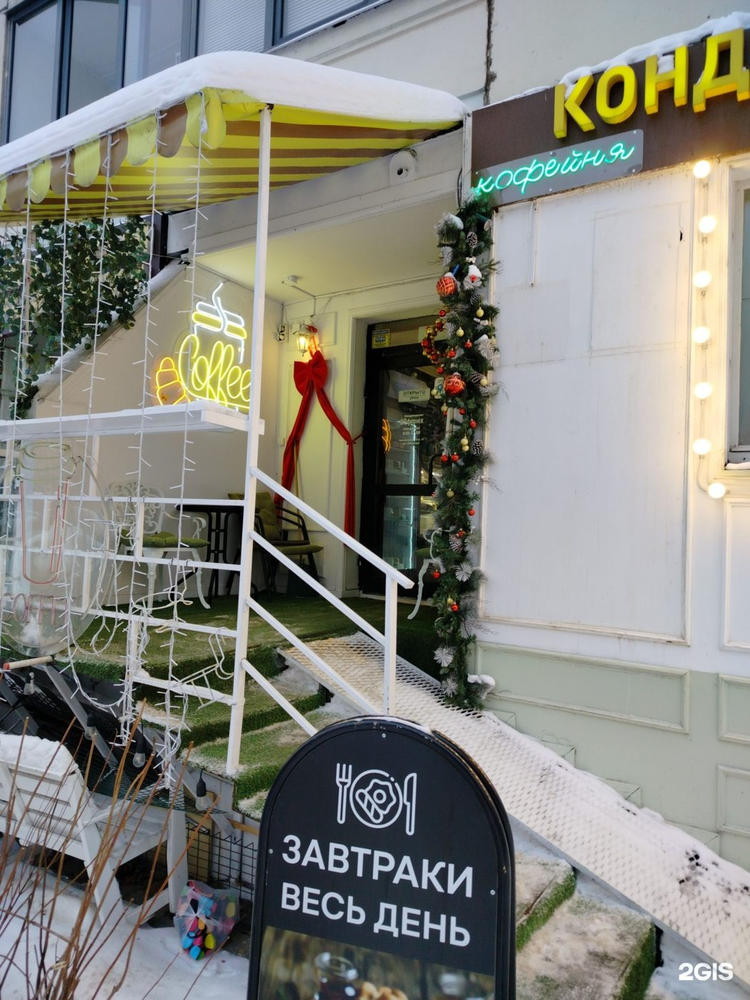

кафе-кондитерская «Негруль» · Красногорский б-р, 19
Пельмени, пирожки, супы и салаты. Ежедневно с 9:00 до 21:00, есть доставка. Средний чек — около 800 ₽.

меню · по данным 2ГИС
Цены отдельных блюд — уточняйте в кафе.
Отзывы · 2ГИС
«Замечательное и атмосферное кафе.\nПомимо вкусного кофе, чая и сладостей\nМожно приобрести средства из Алтая, натуральные свечи из воска и многое другое.\nОтдельный восторге от детской зоны, точнее отдельной комнаты. Где можно почитать, поиграть в настольный футбол и просто пообщ…»